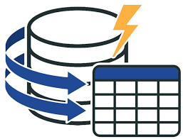
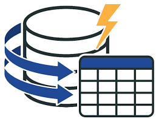

Себастьян Перейра
Автоматизую і візуалізую все, що можна. А інше — теж спробую.
→ Дивитися прикладиАвтоматизую і візуалізую все, що можна. А інше — теж спробую.
→ Дивитися приклади


 


Відповідь зазвичай надходить протягом одного робочого дня.
Так, усі рішення налаштовуються індивідуально під ваші потреби.
Ціна залежить від складності завдання. Попередня оцінка надається після уточнення деталей.
Перша коротка консультація — безкоштовна. Далі — за домовленістю.
Excel, Power BI, Google Sheets, VBA, Apps Script, Power Query, Power Pivot.
Так, створюю повністю автоматизовані звіти під ключ.
Так, використовую оптимізовані рішення для великих таблиць і наборів даних.
Так, можлива інтеграція з API, базами даних, CRM, ERP тощо.
Так, всі проєкти реалізуються онлайн.
Excel, Power BI, Google Sheets або будь-який інший погоджений формат.
Так, конфіденційність гарантована. NDA підписується за запитом.
Так, маю досвід реалізації рішень для державних структур.
Так, створюю динамічні дашборди з фільтрами, графіками, KPI.
Так, реалізую кнопки, макроси, скрипти для взаємодії з користувачем.
Так, надаю інструкції, відео або міні-курси при потребі.
Так, налаштовується автоматичне оновлення з джерел.
Від 1 до 10 днів у середньому, залежно від складності.
Так, текстові або відеоінструкції — за погодженням.
Так, налаштовую публікацію, оновлення і доступи в Power BI Online.
Так, ви можете замовити окремий етап або компонент.
Так, створюю рішення для обліку залишків, руху товару, інвентаризацій.
Так, структура роботи може бути поділена на етапи з оплатою по частинах.
Так, працюю з клієнтами з будь-якої країни.
Так, складні калькулятори з формулами, логікою, умовами.
Так, Google Forms може бути джерелом для аналізу чи автоматизації.
Так, за наявності доступу до API — можливо.
Так, в тому числі для бюджетування, прогнозування, аналізу сценаріїв.
Так, можу провести аудит і внести поліпшення.
Залежить від задачі. Excel — для локального аналізу, Power BI — для візуалізації та доступу онлайн.
Так, надається гарантійна та постгарантійна підтримка.
Так, можу обмежити доступ до окремих частин файлу або звіту.
Так, Power BI дашборди адаптовані для мобільних пристроїв.
Так, за запитом можлива інтеграція через API або скрипти.
Так, за можливості забезпечую сумісність з Mac.
Наразі спеціалізуюсь на Excel/Power BI/Apps Script. Python — обмежено.
Так, налаштовую регулярне оновлення або за розкладом.
Так, можливе двомовне або англомовне рішення.
Так, створюю прозорі звіти, логіку обліку та перевірки.
Так, ChatGPT застосовується для генерації коду, пояснень, логіки.
Так, за допомогою Apps Script або Power Automate.
Ні, більшість рішень працюють без додаткових підписок.
Так, форми з перевіркою, логікою, підрахунками.
Усе розробляється з нуля, під конкретне замовлення.
Передача даних здійснюється лише через безпечні канали. Нічого не передається третім особам.
Так, повна сумісність з M365, Teams, OneDrive, SharePoint.
Ні, більшість рішень працюють у вашому середовищі без встановлення.
Так, всі рішення — з відкритим кодом і доступними формулами.
Так, все зроблено прозоро й зрозуміло — можна змінювати без проблем.
Так, стилі, логотипи, мова, безпека — все враховується.
Так, за запитом можу показати приклади або коротку демонстрацію.